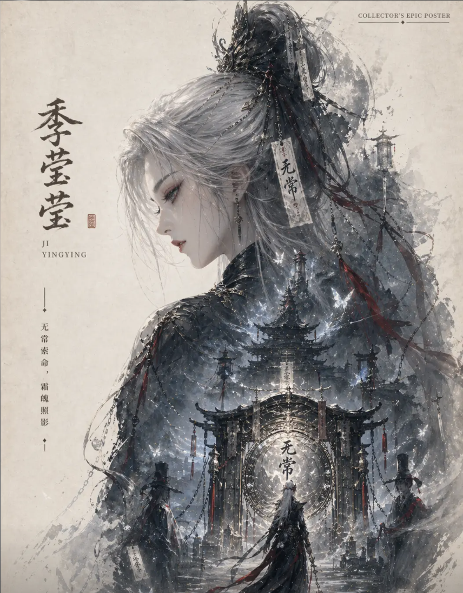

季莹莹是动作竞技游戏《永劫无间》中的角色，出生在无极帝国炎州季家，身份为无常司白无常，职业为鬼差，角色定位是输出位，于 2023 年 6 月 1 日正式上线。以下是关于她的详细介绍：
背景故事：季莹莹天生与众不同，心脏在右边，出生后不久母亲因生产落病离世，她的诞生还带来了会给季家带来毁灭性灾难的预言，季家长老们决定处死她，季父假装当众杀死她，实则让奶妈带她逃到中州。奶妈无法继续抚养，将她卖给牙婆，她经过多次转手后被白无常带到无常司，成为出色的 “杀人机器”，失去了人类情感。新任阎君楚王暗中引导她寻找姓名和身世，使她重新燃起对季家的仇恨，决心复仇。
角色技能：
幽冥火：变为不会受到打击的 “幽冥火”，持续 3 秒，1 秒后能再度按 F 键击败周边对手，进攻或使用道具会结束该状态，受打中可用。
幽冥火・焰锁：变为不会受到打击的 “幽冥火”，持续 5 秒，1 秒后能再度按 F 键击败并灼热周边对手，进攻或使用道具会结束。
无常锁：奥义技能，打开后替换武器为 “无常锁”，获得全新普攻及蓄力招式，“无情劲” 随时间慢慢提高，积累到最大值时依据奥义的挑选，蓄力招式会被替换。有两种奥义效果，分别是 “无常锁” 和 “无常锁・拘”。
角色外貌：季莹莹是一位执掌幽焰、挥舞节鞭的神秘诡谲少女，一头白发，使用幽蓝色链条作为武器，外形十分吸人眼球。
